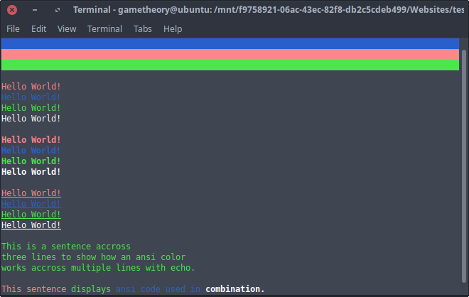

Light Mode
Published: Oct 3, 2019 · By: Antonio T.

Using colors in bash scripts can be very useful. If you’ve written your bash script with menus and prompts, it’s a good idea to use ansi color codes to make your outputs more readable to the user. In this tutorial I’ll cover some ways that you can use colors in your bash scripts for a more GUI like experience.
Ansi color codes always start with these characters “\e[” followed by the numbers that determine the color you want. There are color codes for the foreground(text) and background. There are also color codes for bold, underlines, and high intensity colors.
Colors in bash scripts can be used to distinguish text. For example, you can make error outputs in red text while prompts with instructions in green text. Use bold and underlines to emphasize words and phrases. Background colors can be used for section separation. There’s many ways to put color codes into good use in your bash scripts.
Lets start off by creating a file called “test.sh”. Now copy the code below to the file and give it execute permissions and then run the file in your terminal.
test.sh:
#!/bin/bash
# Ansi color code variables
red="\e[0;91m"
blue="\e[0;94m"
expand_bg="\e[K"
blue_bg="\e[0;104m${expand_bg}"
red_bg="\e[0;101m${expand_bg}"
green_bg="\e[0;102m${expand_bg}"
green="\e[0;92m"
white="\e[0;97m"
bold="\e[1m"
uline="\e[4m"
reset="\e[0m"
# horizontally expanded backgrounds
echo -e "${blue_bg}${reset}"
echo -e "${red_bg}${reset}"
echo -e "${green_bg}${reset}"
echo ""
# colored text
echo -e "${red}Hello World!${reset}"
echo -e "${blue}Hello World!${reset}"
echo -e "${green}Hello World!${reset}"
echo -e "${white}Hello World!${reset}"
echo ""
# bold colored text
echo -e "${red}${bold}Hello World!${reset}"
echo -e "${blue}${bold}Hello World!${reset}"
echo -e "${green}${bold}Hello World!${reset}"
echo -e "${white}${bold}Hello World!${reset}"
echo ""
# underlined colored text
echo -e "${red}${uline}Hello World!${reset}"
echo -e "${blue}${uline}Hello World!${reset}"
echo -e "${green}${uline}Hello World!${reset}"
echo -e "${white}${uline}Hello World!${reset}"
echo ""
# ansi across multiple lines
echo -e "${green}This is a sentence across"
echo "three lines to show how an ansi color"
echo -e "works across multiple lines with echo.${reset}"
echo ""
# combining ansi in one line
echo -e "${red}This sentence ${green}displays ${blue}ansi code used in ${white}${bold}combination.${reset}"
Copy
Lets break things down a bit…
As you can see, we used a few colors and also applied underlines, bold text, and backgrounds.
It’s a good idea to place your color codes in global variables at the top of your script to keep your code neat.
Notice how we always use the echo “-e” flag on lines with color codes. This tells echo to enable interpretation of escapes so that the color codes work. We also place the color code variables in curly brackets “${}” to separate it from normal text.
echo -e "${red}Hello World!${reset}"
Copy
For paragraphs or multi line outputs you do not need the echo “-e” for every line as displayed below.
echo -e "${green}This is a sentence across"
echo "three lines to show how an ansi color"
echo -e "works across multiple lines with echo.${reset}"
Copy
We also use a “reset” variable containing “\e[0m”. This is to stop the ansi code in use, otherwise it will continue running into further output as you saw in the example above with the multi lines.
reset="\e[0m"
Copy
Here is a good list of Ansi color codes you can use in your bash scripts.
# Regular Colors
| Value | Color |
| -------- | ------ |
| \e[0;30m | Black |
| \e[0;31m | Red |
| \e[0;32m | Green |
| \e[0;33m | Yellow |
| \e[0;34m | Blue |
| \e[0;35m | Purple |
| \e[0;36m | Cyan |
| \e[0;37m | White |
# Bold
| Value | Color |
| -------- | -------- |
| \e[1;30m | Black |
| \e[1;31m | Red |
| \e[1;32m | Green |
| \e[1;33m | Yellow |
| \e[1;34m | Blue |
| \e[1;35m | Purple |
| \e[1;36m | Cyan |
| \e[1;37m | White |
| \e[1m | No Color |
# Underline
| Value | Color |
| -------- | -------- |
| \e[4;30m | Black |
| \e[4;31m | Red |
| \e[4;32m | Green |
| \e[4;33m | Yellow |
| \e[4;34m | Blue |
| \e[4;35m | Purple |
| \e[4;36m | Cyan |
| \e[4;37m | White |
| \e[4m | No Color |
# Background
| Value | Color |
| ------ | ------ |
| \e[40m | Black |
| \e[41m | Red |
| \e[42m | Green |
| \e[43m | Yellow |
| \e[44m | Blue |
| \e[45m | Purple |
| \e[46m | Cyan |
| \e[47m | White |
# Expand Background Horizontally
| Value | Color |
| ----- | -------- |
| \e[K | No Color |
# High Intensty
| Value | Color |
| -------- | ------ |
| \e[0;90m | Black |
| \e[0;91m | Red |
| \e[0;92m | Green |
| \e[0;93m | Yellow |
| \e[0;94m | Blue |
| \e[0;95m | Purple |
| \e[0;96m | Cyan |
| \e[0;97m | White |
# Bold High Intensty
| Value | Color |
| -------- | ------ |
| \e[1;90m | Black |
| \e[1;91m | Red |
| \e[1;92m | Green |
| \e[1;93m | Yellow |
| \e[1;94m | Blue |
| \e[1;95m | Purple |
| \e[1;96m | Cyan |
| \e[1;97m | White |
# High Intensty backgrounds
| Value | Color |
| --------- | ------ |
| \e[0;100m | Black |
| \e[0;101m | Red |
| \e[0;102m | Green |
| \e[0;103m | Yellow |
| \e[0;104m | Blue |
| \e[0;105m | Purple |
| \e[0;106m | Cyan |
| \e[0;107m | White |
# Reset
| Value | Color |
| ----- | ------ |
| \e[0m | Reset |
Copy
That will be all for this tutorial. You should now be able to style your bash scripts to make them more aesthetically pleasing for your users.
Tags: tutorials, linux, command line
· More Articles ·
« Check If Directory Exists In Linux With Bash
Create a Menu in a Bash Script »
© 2019 ‐ 2022 · techStop